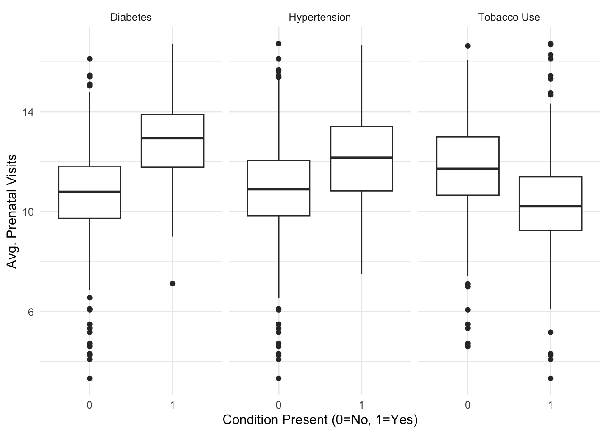
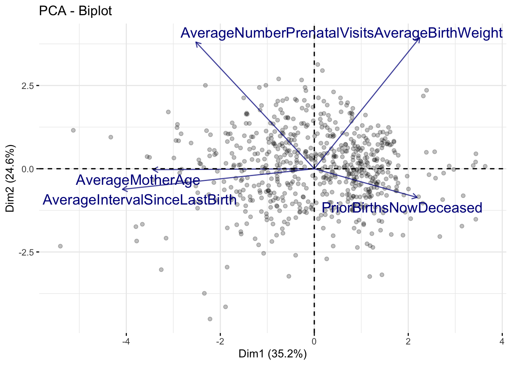
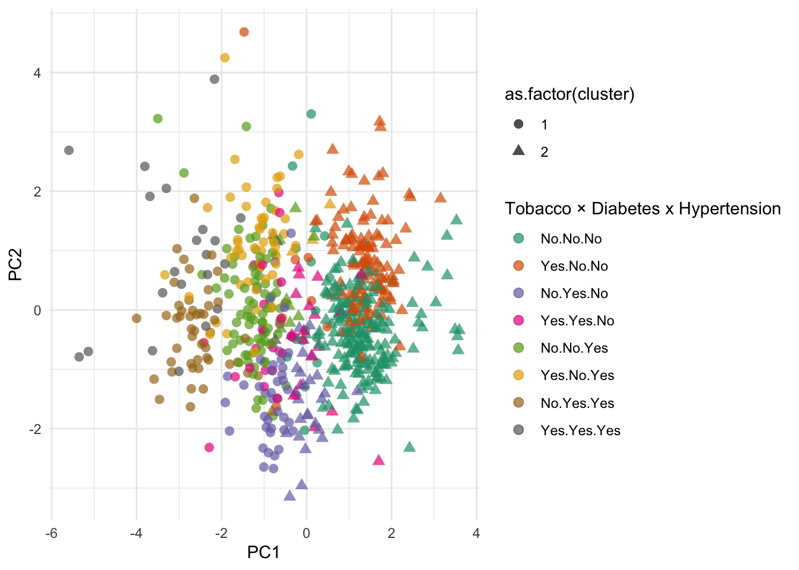

Maternal Healthcare Disparities
Data
- 12 columns
- Aggregated by
State,PriorBirthsNowDeceased,TobaccoUse,PrePregnancyDiabetes,PrePregnancyHypertension BirthsAverageMotherAgeAverageBirthWeightAveragePrePregnancyBMIAverageNumberPrenatalVisitsAverageIntervalSinceLastBirth
Questions
Do certain states have higher BMI rates?
Does the amount of prenatal care visits relate to maternal health risk factors (diabetes, hypertension and tobacco use)
States vs. BMI
Prenatal Visits Versus Risk Factors

Infant Mortality Versus Prenatal Visits

Tobacco, Diabetes, And Hypertensions Effects on Infants

Conclusion
More prenatal visits observed for mothers with diabetes or hypertension.
Fewer visits among tobacco users may signal gaps in care outreach.
There are regional differences in BMI
Mothers who visited the doctor more often seem to have better infant health outcomes despite any risk factors